Dylan
Becchetti
Mechanical engineering. Manufacturing. Software.
I built a production tracker at Cardinal Glass, modeled this sculpture with my capstone team at Lehigh, and write software for problems I want to figure out on my own.
Lehigh B.S. expected January 2027
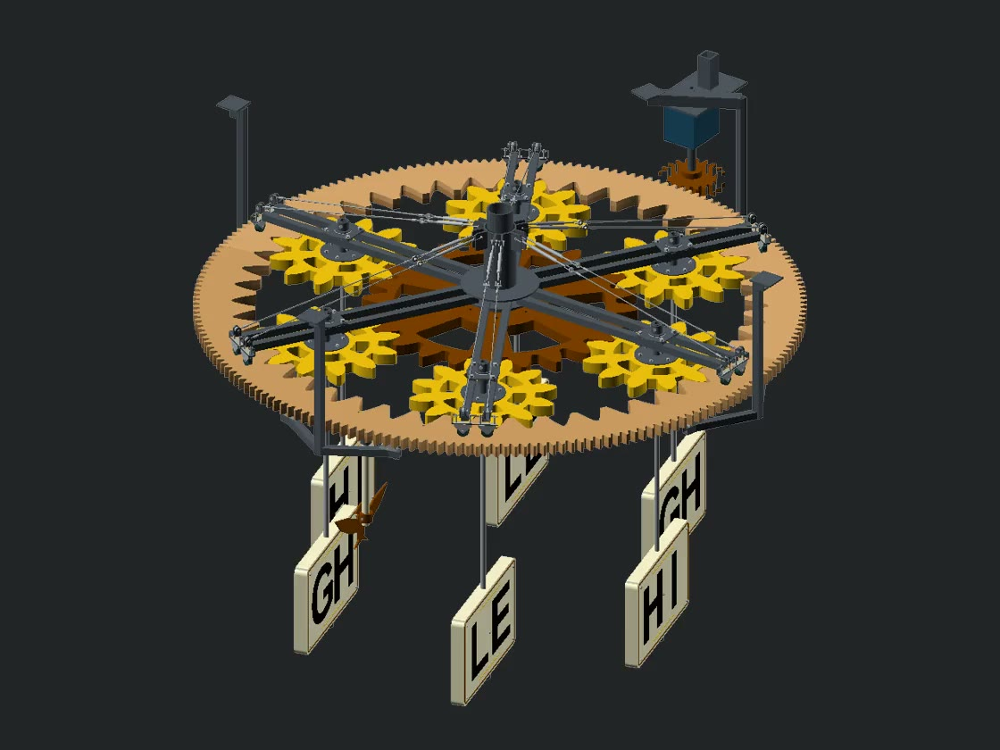
Ring turnsPlanets spinSigns orbit
About me
I’m finishing mechanical engineering at Lehigh. I also spent three summers at Cardinal Glass, where I got to build tools for people I worked with every day.
One of my favorite parts of my last summer was seeing the production tracker I built come up in the end-of-day meetings. I started thinking about Formsby on breaks and lunches there. I wondered whether I could take a request someone had posted and find a useful answer somewhere else. I built a small version to try it.
Three summer internships · 2023–2025
Cardinal Glass
I built an Excel/VBA tracker for the end-of-day meetings on an R&D production line. I also worked on the weekly Scorecard, which pulled quality, output, yield and delivery information from separate files into one view.
Weekly operations scorecard · Fictional records
What happened on the line?
Pick a reporting week, change the downtime on a shift, or trace a number back to its source. The examples use the rules I worked out for the weekly Scorecard.
Turn date-coded IDs into a weekly defect report
The source quality log held more than 10,000 unit records. Each ID contained its production date, so a selected week could determine which records to count.
- Inspected units
- 42
- Failed units
- 12
- Primary particle failures
- 6
| Defect | Count | Share of failures |
|---|---|---|
| Particle — Surface | 6 | 50.0% |
| Coating — Pinholes | 3 | 25.0% |
| Handling — Scratch | 3 | 25.0% |
Particle failures: 14.3% of inspected units, or 50.0% of failed units. The denominator changes the meaning.
Follow one source record into the report
250605001 means June 5, 2025 · unit 001. This fictional failed unit has “Particle — Surface” as its primary defect and “Particle — Edge” as a second defect. The retained report counts the primary defect once. An earlier experiment counted all three defect fields and grouped families; that was a different report version.
The defect report ranked the primary defect counts from largest to smallest. These 84 example units are fictional; the 10,000+ figure describes the original source log.
A late start should not be subtracted twice
If recorded downtime already includes the gap before the first production event, subtracting all of it from the observed span understates line time. The documented rule allocates downtime to a late start, then an early stop, and subtracts what remains.
- 06:00 → 17:30Target shift
- 08:00 → 17:15Actual span: 555 minutes
- 120 minutesLate-start gap
- 15 minutesEarly stop: below the 30-minute threshold
- Allocated to late start
- 120 min
- Remaining downtime
- 30 min
- Reported line time
- 8.75 hr
555 minutes − 30 minutes = 525 minutes of reported line time.
Fictional shift. Gaps qualify only when greater than 30 minutes; the full qualifying gap can receive downtime. Allocation is capped by recorded downtime, and line time cannot go below zero. The example applies the documented reporting rule.
Connect the dates without rebuilding everyone's worksheets
| Source | Reporting problem | What I worked on |
|---|---|---|
| Yield workbook | One week can contain several observations. | Match all dates within the week and average their percentages. |
| End-of-day report | Weekly blocks extend across hundreds of columns. | Navigate to the selected week in place, preserving formulas and comments. |
| Work-order log | Due dates and status highlights change during the week. | Classify delivery risk for the active week while preserving previous weeks. |
Work through a yield example
Fictional readings: June 5: 88% · June 8: 94% · June 11: 91%. All three dates belong to June 5–11, so the reported mean is 91.0%. Matching the week to just one source row would miss two observations. This is an average of recorded percentages; it is not a unit-weighted yield.
See a delivery-rule edge case
A fictional order due two days ago enters the Late bucket if unhighlighted. Under the later documented rule, a highlighted order is excluded from the first three risk buckets. An order due more than 28 days away enters On time regardless of highlighting. “On time” is a planning category, not evidence of shipment.
Three working selectors navigated EOD weeks, scorecard weeks and defect-report periods. Scheduled refresh was unreliable, so a saved week reflects its last successful update.
This reconstructs the weekly system. I built a separate tracker for the daily R&D debrief. Open the full reconstruction and source records →
- 2023
Engineering
Rotated through maintenance, quality and R&D. Inspected units, analyzed data in Minitab, drafted equipment layouts in AutoCAD and contributed to design failure mode reviews.
- 2024
Continuous improvement
Wrote illustrated build instructions for customer samples, planned spare-parts organization and signage across 14 warehouse locations, and measured cleanroom airflow with a capture hood and micromanometer.
- 2025
Continuous improvement
Built Excel/VBA reporting for the R&D line and worked with engineers and operators to bring daily production data into the shift debrief.

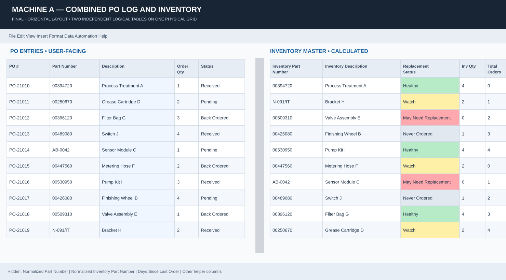

The figures use fictional records. The interactive demo reconstructs the weekly reporting system, which is documented in more detail than the daily debrief tracker.
Lehigh capstone · Spring and fall 2026
Kinetic Wilbur
My team is building an 80-inch kinetic sculpture to hang above a classroom at Wilbur Powerhouse. A planetary gear train makes six signs spin and orbit, so people can watch the mechanism work and see the kind of projects that come out of Lehigh’s Design Labs.
I did much of the mechanical design and built the parametric OpenSCAD models, from small proof-of-concept assemblies to the full-scale design. I worked with the team and our sponsor to turn that model into parts we could actually make at Lehigh.
- Outer diameter, current CAD
- 79.5 in
- Orbiting sign assemblies
- 6
- Capstone design and fabrication
- 2 semesters
Inside the sculpture
Explore the full assembly, the parts that carry it, and what changed when we started making it at full scale.

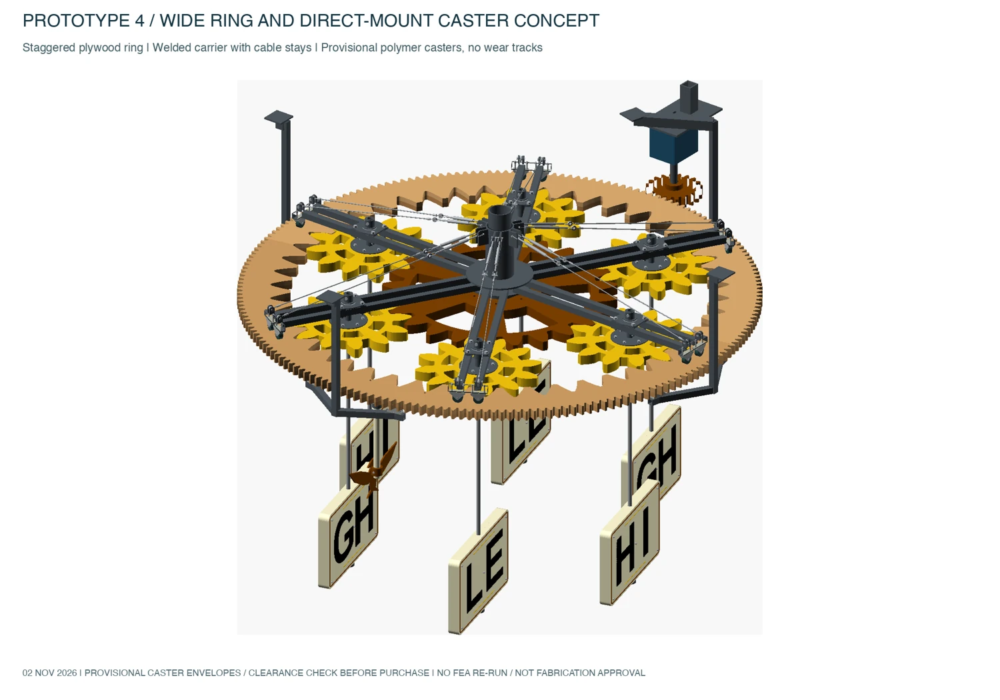
One motor, six signs
The motor turns an external pinion, which drives the outer ring. The six planet gears mesh between that ring and a fixed sun gear. Each planet spins its sign while the carrier moves all six around the center.
We kept the gearing visible from below. The hanging figures and lettering give visitors a way into the motion and tie the display back to Wilbur and Lehigh.

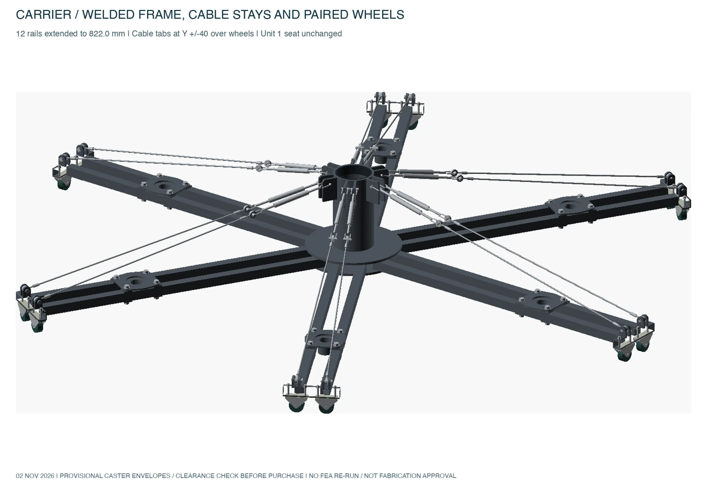
How the assembly carries its weight
I replaced the plywood carrier concept with six paired steel-tube arms welded to a central hub. A thrust bearing supports the rotating carrier at the center. Cable stays run from the carrier’s mast to the ends of the arms. The arm ends roll on the ring, and four fixed support stations carry the ring from below.
In the team’s analysis of an earlier carrier, adding stays reduced predicted deflection at the planet support from 0.94 mm to 0.41 mm and shifted more load to the center bearing. The November wheel mounts and installed assembly still need their own checks.

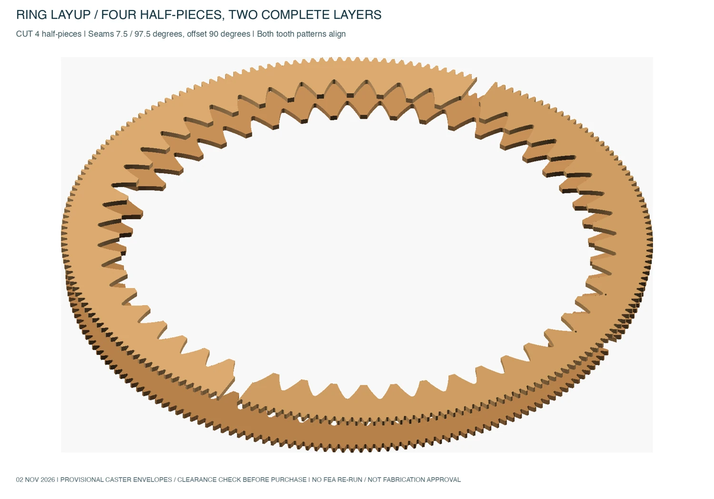
One ring, two gear meshes
We tested steel and nylon ball transfers with our sponsor and found both louder than we wanted. I modeled fixed casters and widened the solid plywood band they roll on, keeping the inner gear profile so it would still mesh with the planets.
I staggered the plywood joints between layers so no seam runs through the full thickness. The wider ring took the motor mount 70 mm farther out and changed the pinion-to-ring reduction to 10:1.

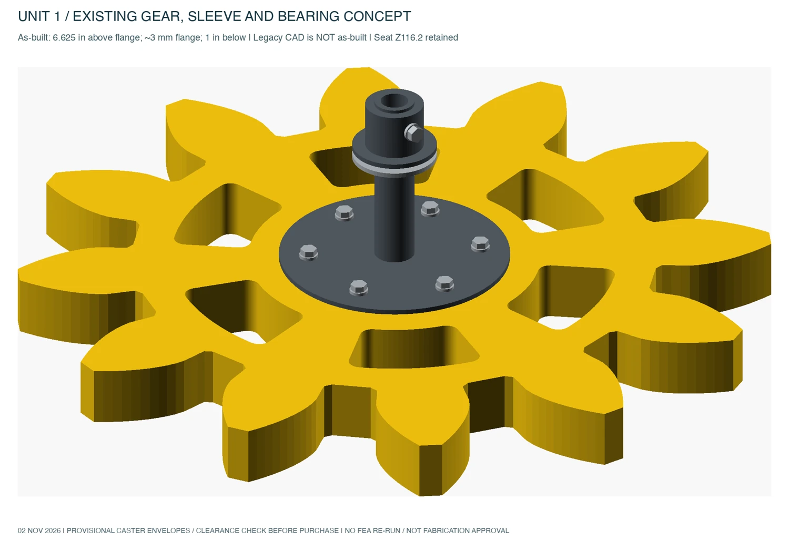
Build one before making six
We CNC-cut the plywood gear, welded the steel sleeve and plates, then fitted the gear into the first assembly. The sleeve measured about 1.02 inches across. We sanded the first bore to fit and allowed more clearance for later cuts.
The first unit gave the team a full-scale reference for making the other five, including the bearing and shaft fit.
From a desk prototype to the shop
In spring we interviewed students, faculty and tour guides. They wanted something visitors could understand quickly, with motion that would draw people in without disrupting the space. We turned those conversations into requirements for safe placement, noise, maintenance, cost and fabrication with the tools at Lehigh. We compared concepts and took apart a toy carousel and a planetary gear system before committing to our own mechanism.
My first OpenSCAD prototype had a base and a wave cam that moved the figures up and down. For the second I removed the base and vertical motion, moved the support overhead and kept the spin and orbit. We printed small assemblies to work out fit and motion before moving to full-scale plywood and steel in the fall.
At full scale we tracked weight and cost alongside fit, noise and shop capacity. An earlier material study estimated about 365 lb for the sculpture before mounting and drive hardware. The fall review listed 280 lb for a lighter iteration. We also modeled ten years of costs, including electricity, maintenance and replacement parts. The wider ring exceeded the original six-foot target, so we brought the installation envelope back to the sponsor. Final weight depends on the revised parts and installation hardware.

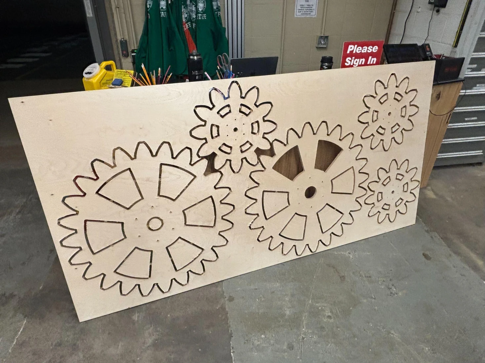
Fall design review · First full-scale gear unit assembled. Remaining carrier, ring and installation work ahead.
Midas Futures
I started with an equities scheduler. I kept building because I wanted to see what happens between a good-looking backtest and a strategy you can actually trust to run.
I built a research pipeline around that question. It runs batches of strategy variations, tests what happens when I add or remove a signal, and simulates what it would cost to keep an account going. I can test strategies together under one set of risk limits and see which results hold up. A separate Practice system handles execution and reconciliation.
Define the experiment
Freeze the strategy, code, data, time window and costs so each result belongs to a specific run.
Replay and compare
Use shared decision rules and a simulated clock. Run variants in batches and resume from verified checkpoints.
Simulate the account
Put strategies under shared risk limits. Track evaluations, resets, fees and payouts across the observation window.
Review before Practice
Compare with retained controls. Practice has its own authorization, execution ledger and reconciliation.
Historical account simulation · November 10, 2026
Could this signal work on its own?
I started the campaign to test one signal on its own and compare it with earlier configurations. The records below are from the completed cloud experiment.
- 52 requested16 lacked a complete historical window.
- 18 of 36 savedStopped at the planned checkpoint.
- 36 completedResumed automatically from that checkpoint.
- 252 comparedAdded 36 new results and kept 216 earlier rows intact.
Decision: keep it in research. All 36 cases were still in evaluation at cutoff. None had passed evaluation or received a payout.
120-session windows
Each cost setting contains 10 cases. The observed median after modeled costs was the same under both settings.
| Cost setting | Cases | Median cash |
|---|---|---|
| Baseline | 10 | −$546 |
| Higher costs | 10 | −$546 |
180-session windows
Each cost setting contains eight cases. The higher-cost comparison was the one specified in advance for the decision. It failed the cash and payout gates.
| Cost setting | Cases | Median cash |
|---|---|---|
| Baseline | 8 | −$780 |
| Higher costs | 8 | −$780 |
The windows can overlap. The case counts describe the experiment, and the cash figures are simulated.

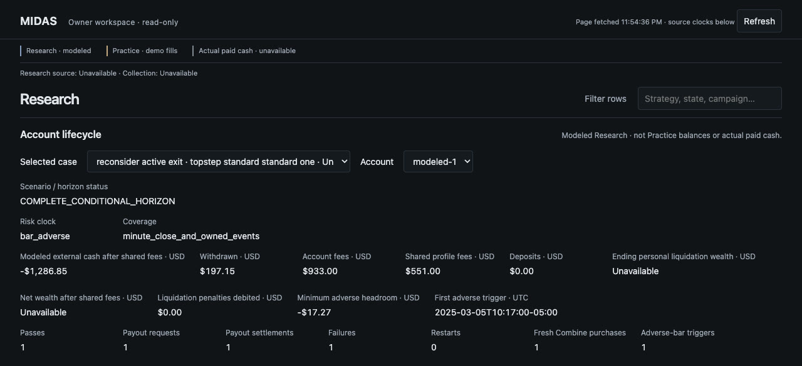
Making the system agree with itself
Replay and forward evaluation once disagreed on when a bar was complete and which price an exit could use. I put those decisions into a shared state machine. A retained check matched 228 session decisions and 225 modeled trade lifecycles against a frozen reference.
I also built a Mac queue that ran 288 variants at two cost settings in one observed campaign. It returned the saved result for a duplicate and rejected an invalid request before starting a run.
Historical backtest and comparison runs
Historical backtest
+$7,586
Modeled net P&L across 365 signals and 374 dates, June 2024–December 2025. The comparison used one micro Nasdaq futures contract, a fixed 58-minute hold and $7.24 in modeled round-trip costs. The strategy’s modeled max drawdown was $2,089.
| Same dates and cost model | Net P&L |
|---|---|
| Strategy direction | +$7,586 |
| Always long | −$2,311 |
| Always short | −$2,974 |
Cumulative modeled net P&L by month
- Strategy direction
- Always long
- Always short
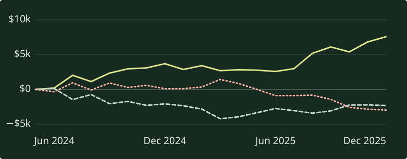
Scanned Leverage and Optimized Production
I wanted to build a repeatable way to study a market, turn what I observed into design questions, and make original prototypes I could test.
Roblox is the first market. I built a research side that organizes rankings, descriptions and annotated gameplay by source and game. It gives me a way to compare how different games handle the same action or reward. I built the production side so I can turn those questions into my own designs, then change a map or rule without starting the next build from scratch.
Scan the market
Join market observations to the right game and keep their original source.
Break down play
Turn annotated gameplay into actions, state changes and rewards. Leave gaps visible.
Build original variants
Set the rules and geometry in a configuration. Assemble a Roblox place using shared code.
Check the result
Reject blocked routes and invalid settings. Rebuild from the same inputs and compare the output.
Signal Break · Original two-player prototype
One game. Two builds.
Compare the layouts and follow one tested round. I regenerated both places from their committed configurations and matched both saved build hashes.

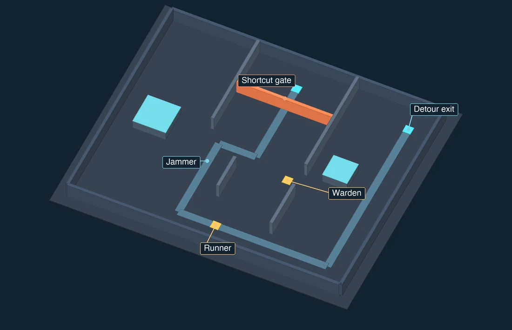
Build A
The runner can recover the jammer and risk the contested shortcut or take the always-open detour. This version has two storage obstacles.
The runner starts at the same point in both builds. The shortcut gate and the five-second opening are also shared.

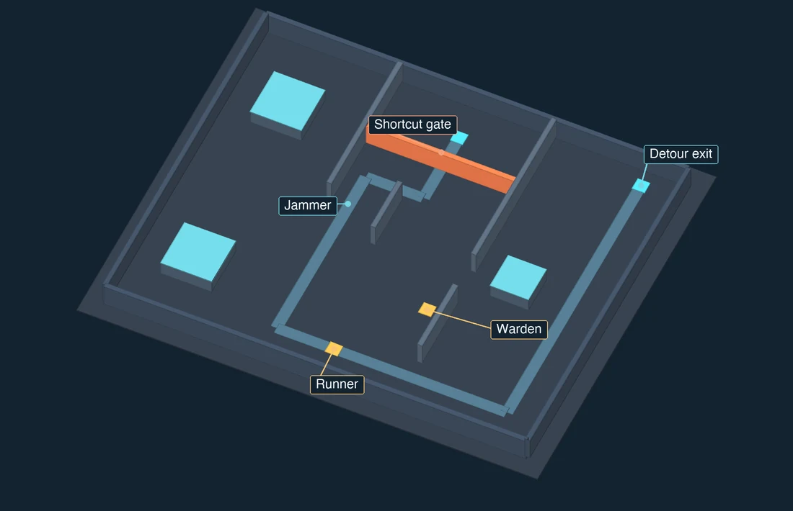
Build B
The jammer, warden start, detour exit and a piece of interior cover move. This version has three storage obstacles.
The game state, server and client logic are shared. The new layout comes from the build configuration.
Tested in both configurations
- Pick upAt three seconds the runner recovers the jammer. Trying to use it back at the start is refused.
- Open the gateAt four seconds the runner uses the jammer at the gate. The shortcut opens for five seconds, and the warden can see the runner’s position.
- Take the exitAt six seconds the runner reaches the open exit and wins. A separate test tries the shortcut after it closes and gets refused.
- Swap rolesWhen both players ready up again, the other player becomes the runner.
The automated test exercises the game rules with declared positions and times. Multiplayer playtesting is a separate step.

Deciding what to build next
I held a separate collector concept at storyboard review because its second trip repeated too much of the first. That is part of the system I want to build: use the research to decide what deserves a test, then build that test from shared parts. The same approach could work with other products by changing the observations, the components and what the test has to prove.
Operalith
I started Operalith because a task is rarely just a task. It can be part of a project, depend on supplies and start with a customer enquiry. I wanted someone to choose the tools they need and still be able to follow those connections.
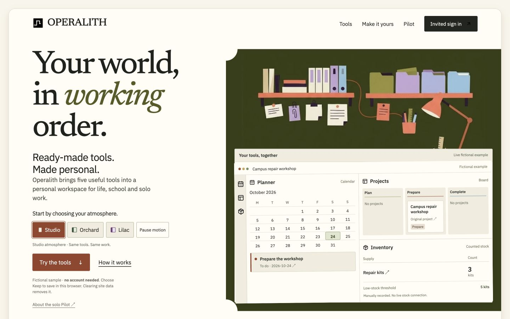
I built a catalogue for choosing tools and adding compatible features. Records stay connected as the workspace changes. For example, a project can link to the original enquiry and the supplies it needs. The public demo keeps sample work in your browser. A separate, invited solo pilot saves fictional records to an account.
I designed account saves to prevent duplicate writes and stop an older browser tab from overwriting newer work. In a hosted test, an edit survived reload and undo restored the previous value while keeping all 11 prior history entries.
Try the connected workspace →Formsby
Someone’s request on one site might have an answer on another. I started Formsby to build one system that could understand the need, find a relevant person or resource, and help make the connection. Housing was my first test of that idea.
Inside the housing application
- 01Save the requestKeep the signed-in user, original form and search settings together.
- 02Interpret the needSeparate budget, location, timing, must-haves and preferences.
- 03Search across sourcesRun source adapters, merge duplicate URLs and record connector failures.
- 04Evaluate each candidateSave the source evidence, score, explanation and search-run identity.
- 05Return the latest resultsKeep private results tied to their run, with separate partial and failed states.
I spent months working through the product and its Python prototype. I separated discovery, interpretation, matching and communication so new categories could share the same core. I built city and category lookups, persistent lead IDs and parent-linked match IDs. When a source returned HTML but no records, I traced the problem to outdated selectors and restored full-text extraction in a five-result test.
The harder problem was deciding what counted as a useful match. A directory link or a plausible description wasn’t enough. I wanted a specific option with enough source information for someone to act on. That requirement led me toward fetching and evaluating individual offers, keeping the original request attached, and recording why a candidate was selected.
In the later housing build, I implemented signed-in intake, background job dispatch, source adapters, duplicate removal, ranked results and payment handling. Requests, runs, listings and evaluations have separate records. If one connector fails, the run can retain the other results and show a partial status. The dashboard returns the latest run’s results for the signed-in user.
A design decision beyond the housing prototype. For the original paid-introduction concept, I designed a flow that prepared a match packet before checkout and tied it to a persistent ID. Payment would retrieve the saved packet instead of repeating the search and producing a different answer. The Python prototype included file-based unlock logic. Completing that delivery flow, expanding categories and adding private conversations are part of the broader product I want to build.
Housing prototype · Sample request
What makes a useful match?
Follow a fictional request through candidate scoring, then inspect what the source code does when a connector fails. I ran the fallback matcher on three invented listings. The other examples trace the behavior in the application source.
“A one-bedroom in Bethlehem, under $1,500. Cats allowed.”
- LocationBethlehem
- Budget$1,500 maximum
- Bedrooms1
- Must-have“cats allowed”
This example starts with the request already in structured form and runs the March build’s fallback scoring functions.
What did the matcher find?
| Candidate evidence | Score | Matcher’s explanation |
|---|---|---|
| 1 bedroom apartment Bethlehem · $1,450 “Cats allowed.” | 78 / 100 | Location aligned; bed count may align; mentions cats allowed. |
| Studio apartment Bethlehem · $1,300 “Pet policy not stated.” | 70 / 100 | Location aligned; bed count may align. |
| Garden apartment Easton · $950 “Pet policy not stated.” | 45 / 100 | “Matched on housing subtype and location.” This is the fallback’s generic text, despite no matching location. |
Why did a studio receive a bedroom bonus?
The fallback starts at 45, adds 15 for a location mention, 10 for the requested bedroom digit anywhere in the text, and 8 per must-have phrase. The “1” in “$1,300” triggers the bedroom bonus. It does not enforce the budget or verify availability.
The processor’s code keeps candidates scoring at least 50 and sorts them highest first. Applying that rule to the sample leaves the one-bedroom and the studio.
The next quality gate: structured bedroom and budget checks, evidence-specific explanations, and independent availability verification. These scores describe a prototype fallback, not measured recommendation accuracy.
A useful result needs a trustworthy run history.
Suppose two sources return the same listing URL and a third fails. Here is how the application code handles that case.
- Keep one candidateThe processor keeps the first candidate for each canonical URL.
- Mark partial resultsA connector failure records PARTIAL; saved matches receive NEEDS_REVIEW.
- Read the latest runThe detail endpoint selects the newest run and queries only its evaluations.
- Check the ownerThe request query includes the signed-in user ID. A missing or other user’s request returns 404.
What if nothing comes back?
Zero results with no connector errors can still be READY. Connector errors produce PARTIAL even with zero results. An exception caught by the processor’s outer handler records FAILED. These states distinguish an empty search from incomplete source coverage and an aborted run.
New candidates start with a CURRENT status. Confirming whether a listing is still available is a separate check. This example traces the owner and latest-run filters in the source code.
One product idea, two generations of implementation.
| Stage | Evidence and boundary |
|---|---|
| Original Python prototype | City/category lookups, persistent lead IDs and parent-linked match IDs. Historical selector debugging recovered five full-text candidates. File-based payment flags simulated unlocking saved text. |
| Later housing application | Source contains authenticated requests, run records, source adapters, URL deduplication, evaluations and private latest-run results. The ranking panel runs through one part of that build. |
| Original design, still broader than this build | Prepare a match packet before payment and deliver that exact packet by persistent ID. The later housing code instead dispatches processing after payment when billing is enabled. Completed paid delivery, more categories and private conversations remain future work. |
The scoring example uses fictional listings and the fallback from the March 15, 2026 source snapshot (d61dc649).
Housing prototype · Last code update March 2026 · Python, Next.js, PostgreSQL, Prisma, Inngest and Stripe
Résumé & contact
I’m finishing my Mechanical Engineering B.S. and Materials Science and Engineering minor at Lehigh. I expect to complete coursework in December 2026 and receive my degree in January 2027. I’m interested in full-time, U.S. remote engineering work.